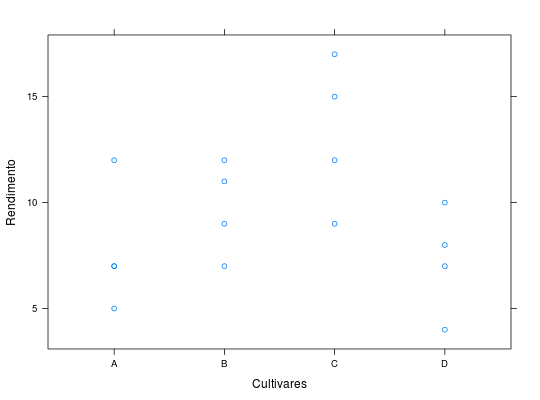

Dados de um experimento no delineamento quadrado latino em que foram avaliados os rendimentos (t/ha) de quatro cultivares de alho. Na escolha do delineamento, o bloqueamento de linhas foi em razão da heterogeniedade da fertilidade entre as curvas de nível (cada curva igual a uma linha) e o bloqueamento de colunas foi devido à heterogeneidade entre os tamanhos dos bulbos de alho.
Um data.frame com 16 observações e 4 variáveis, em que
filacoltratrendSTORCK et al. (2011), Tabela 2.3.5, pág. 63.
library(lattice) data(StorckEg2.3.5)#> Warning: data set ‘StorckEg2.3.5’ not foundstr(StorckEg2.3.5)#> 'data.frame': 16 obs. of 4 variables: #> $ fila : Factor w/ 4 levels "1","2","3","4": 1 1 1 1 2 2 2 2 3 3 ... #> $ colun: Factor w/ 4 levels "1","2","3","4": 1 2 3 4 1 2 3 4 1 2 ... #> $ cult : Factor w/ 4 levels "A","B","C","D": 2 4 1 3 1 3 4 2 4 2 ... #> $ rend : int 11 4 7 15 12 9 7 9 8 7 ...xyplot(rend ~ cult, data = StorckEg2.3.5, xlab = "Cultivares", ylab = "Rendimento")